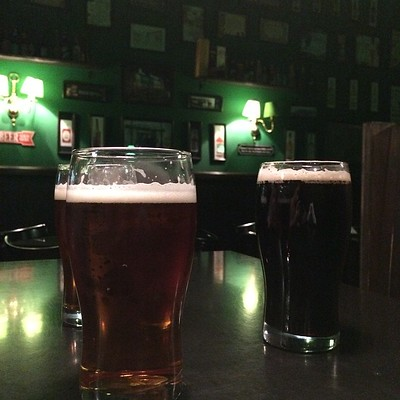
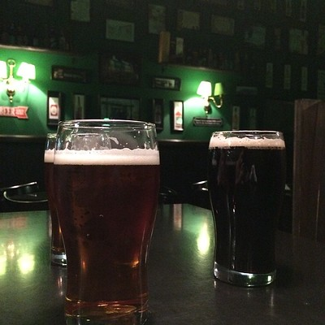

La
Inagurada en el año 2019. Es una planta de tamaño mediano que cuenta con un equipo de cocción de 18.000 litros. Con fermentacion y maduracion en acero inoxidable, para lograr los más altos éstandares de calidad.
La Barley
Inagurada en el año 2019. Es una planta de tamaño mediano que cuenta con un equipo de cocción de 18.000 litros. Con fermentacion y maduracion en acero inoxidable, para lograr los más altos éstandares de calidad.
